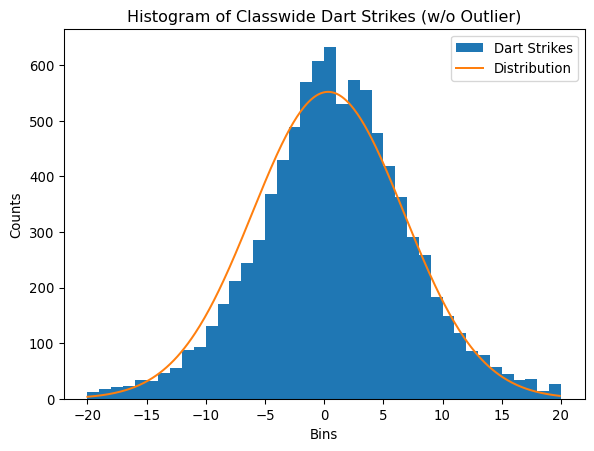

import pandas as pd
import numpy as np
import matplotlib.pyplot as plt
import scipydarts2
Start with our imports
First we grab our data
dartboard_data = pd.read_csv("combined_dart_strikes.csv")
my_data = pd.read_csv("Shahid_Sovereign_dartboard.csv")
my_strikes = my_data["Dart Strike"].to_numpy()
dart_strikes = dartboard_data["Dart strike"].to_numpy()
dartboard_data.head()| Dart strike | |
|---|---|
| 0 | -12 |
| 1 | -10 |
| 2 | -8 |
| 3 | -5 |
| 4 | 0 |
Create a function to calculate the mean and std of an array
def mean(arr):
return sum(arr)/len(arr)
def std(arr):
return np.sqrt((sum((arr - mean(arr))**2))/(len(arr)-1))Get the mean and std
print("Numpy Data")
print(f"""My Data:
mean: {my_strikes.mean():.4f}
std: {my_strikes.std():.4f}
std_uncertainty: {my_strikes.std()/np.sqrt(len(my_strikes)):.4f}
Class Data:
mean: {dart_strikes.mean():.4f}
std: {dart_strikes.std():.4f}
std_uncertainty: {dart_strikes.std()/np.sqrt(len(dart_strikes)):.4f}""")Numpy Data
My Data:
mean: 1.4467
std: 5.1479
std_uncertainty: 0.4203
Class Data:
mean: 0.3419
std: 6.4152
std_uncertainty: 0.0682print("My Data")
print(f"""My Data:
mean: {mean(my_strikes):.4f}
std: {std(my_strikes):.4f}
std_uncertainty: {std(my_strikes)/np.sqrt(len(my_strikes)):.4f}
Class Data:
mean: {mean(dart_strikes):.4f}
std: {std(dart_strikes):.4f}
std_uncertainty: {std(dart_strikes)/np.sqrt(len(dart_strikes)):.4f}""")My Data
My Data:
mean: 1.4467
std: 5.1651
std_uncertainty: 0.4217
Class Data:
mean: 0.3419
std: 6.4156
std_uncertainty: 0.0682Define a function for the distribution
def N(x, mean, std):
return 1/(std*np.sqrt(2*np.pi)) * np.exp(-((x-mean)**2)/(2*std**2))
# Normal distribution of counts
# total_num_events*N(x,mean,std)Plot the class wide histogram
X = np.arange(-20,20, 0.1)
plt.figure()
plt.title("Histogram of Classwide Dart Strikes (w/ Outlier)")
plt.xlabel("Bins")
plt.ylabel("Counts")
plt.hist(dart_strikes, bins=41, label="Dart Strikes")
plt.plot(X, len(dart_strikes)*N(X, mean(dart_strikes), std(dart_strikes)), label="Distribution")
plt.legend()
plt.show()Plot my histogram
X = np.arange(-20,20, 0.1)
plt.figure()
plt.title("Histogram of Personal Dart Strikes")
plt.xlabel("Bins")
plt.ylabel("Counts")
plt.hist(my_strikes, bins=41, range=(-20,20), label="Dart Strikes")
plt.plot(X, len(my_strikes)*N(X, mean(my_strikes), std(my_strikes)), label="Distribution")
plt.legend()
plt.show()Check for outliers
np.sort(dart_strikes)[-5:]array([20, 20, 20, 20, 47])We should not have this outlier since it is beyond our bins, so we scap the one bad datapoint, and recalculate the mean and std
fixed_strikes = dart_strikes[dart_strikes <= 20]
print(f"""Fixed Strikes:
mean: {mean(fixed_strikes):.4f}
std: {std(fixed_strikes):.4f}
std_uncertainty: {std(fixed_strikes)/np.sqrt(len(fixed_strikes)):.4f}""")Fixed Strikes:
mean: 0.3366
std: 6.3967
std_uncertainty: 0.0680Now we Plot without outliers
plt.figure()
plt.title("Histogram of Classwide Dart Strikes (w/o Outlier)")
plt.xlabel("Bins")
plt.ylabel("Counts")
plt.hist(fixed_strikes, bins=41, label="Dart Strikes")
plt.plot(X, len(fixed_strikes)*N(X, mean(fixed_strikes), std(fixed_strikes)), label="Distribution")
plt.legend()
plt.show()
Get the bins and counts in the bins
class_bins, class_counts = np.unique(fixed_strikes, return_counts=True)
my_bins, my_counts = np.unique(my_strikes, return_counts=True)
# Ignore bins that have no counts as they will skew the results of the fit
class_expected = len(fixed_strikes)*N(class_bins, fixed_strikes.mean(), fixed_strikes.std())
my_expected = len(my_strikes)*N(my_bins, mean(my_strikes), std(my_strikes))Perform a chi^2 test on each dataset
# Class Wide
chi2_stat, p_value = scipy.stats.chisquare(class_counts, f_exp=class_expected, sum_check=False)
#chi2_stat = np.sum((class_counts - class_expected)**2 / class_expected)
#p_value = scipy.stats.chi2.cdf(chi2_stat, df=len(class_bins)-3)
print(f"""Class Stats:
#-counts: {len(class_counts)}
#-bins: {len(class_bins)}
Chi-square statistic: {chi2_stat}
P-value: {p_value}""")
# Personal
chi2_stat, p_value = scipy.stats.chisquare(my_counts, f_exp=my_expected, sum_check=False)
#chi2_stat = np.sum((my_counts - my_expected)**2 / my_expected)
#p_value = scipy.stats.chi2.sf(chi2_stat, df=len(my_bins)-3)
print(f"""\nMy Stats:
#-counts: {len(my_counts)}
#-bins: {len(my_bins)}
Chi-square statistic: {chi2_stat}
P-value: {p_value}""")Class Stats:
#-counts: 41
#-bins: 41
Chi-square statistic: 198.46991860479932
P-value: 7.004836864455849e-23
My Stats:
#-counts: 25
#-bins: 25
Chi-square statistic: 21.775709049958802
P-value: 0.592651908460754The class p-value is astronomically small so we can safely assume the data is normal, however the p-value of the personal data does not have a good fit. This can be attributed to the multimodal nature of the data (two significant peaks at 0 and 3)
my_bins = [my_bins[i] for i in range(0,len(my_bins),2)]
if len(my_counts) % 2 == 1:
my_counts = np.append(my_counts, [0])
my_counts = np.array([my_counts[i] + my_counts[i+1] for i in range(0,len(my_counts)-1, 2)])
my_expected = len(my_strikes)*N(my_bins, mean(my_strikes), std(my_strikes))
chi2_stat, p_value = scipy.stats.chisquare(my_counts, f_exp=my_expected, sum_check=False)
print(f"""\nMy Stats:
Chi-square statistic: {chi2_stat}
P-value: {p_value}""")
My Stats:
Chi-square statistic: 102.38021847168638
P-value: 1.9003468707377165e-16